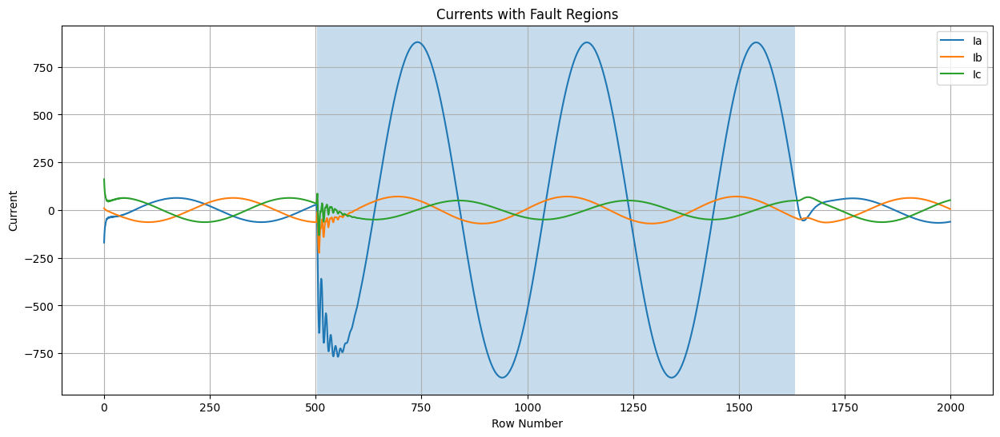
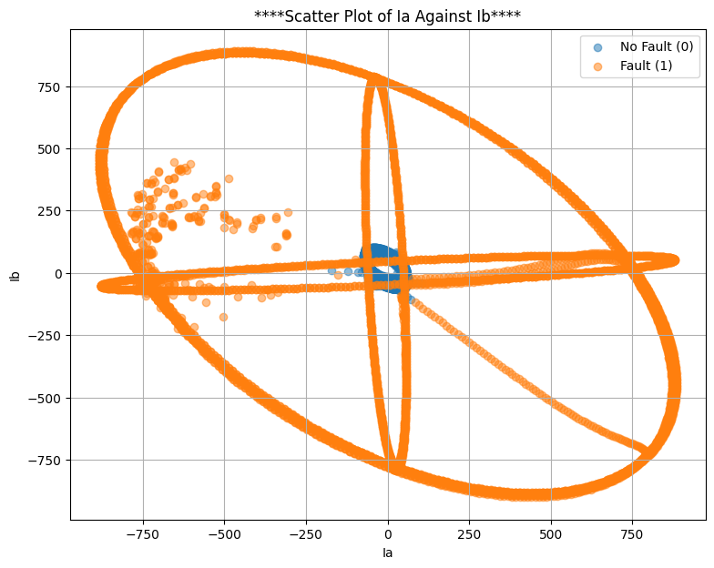
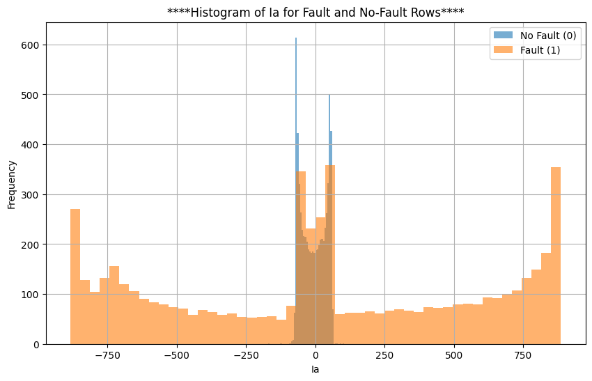
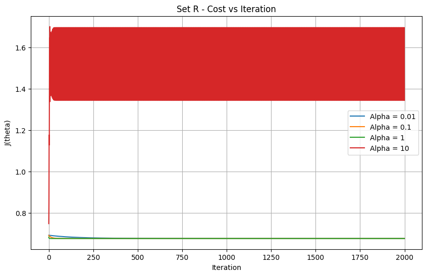
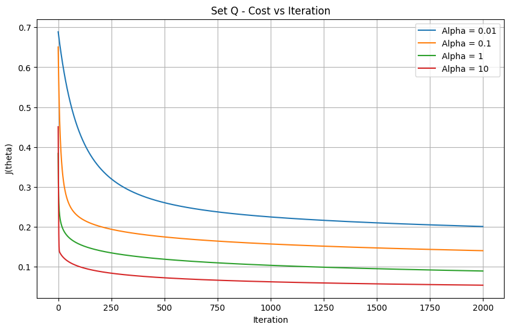

A transmission-line fault can make current rise sharply and voltage fall. A protection relay needs to identify the event quickly because a missed fault may prevent a breaker from tripping. This project asks whether a straight-line classifier can recognise faults from six instantaneous measurements—or whether feature engineering or a nonlinear classifier is needed.
1. The problem and data
The dataset is the Electrical Fault Detection and Classification dataset described in the assignment. Each row represents one instantaneous sample from a simulated three-phase power system. The inputs are currents Ia, Ib, Ic and voltages Va, Vb, Vc; the target label is fault, where 1 means fault and 0 means no fault. The notebook contains 12,001 rows and seven retained columns: the label and six measurements. It reports 6,505 no-fault rows and 5,496 fault rows.
The data were split using NumPy's random generator with seed 42: 7,200 training rows (60%), 2,400 validation rows (20%), and 2,401 test rows (the remainder). The fault fractions were 46.07%, 45.13%, and 45.65%, respectively. Standardisation used only the training-set mean and standard deviation, then applied those same statistics to validation and test data. This avoids using held-out feature statistics during preprocessing.
2. Exploring the measurements

The current traces change substantially in some fault regions. These changes make current measurements useful indicators, although not every fault produces an identical pattern. A relay should consider all available measurements rather than relying on one phase alone.

The scatter plot shows that fault samples occupy a wider range of current values, while many no-fault samples cluster closer to the centre. However, the classes overlap. A single straight line in the Ia–Ib plane cannot perfectly separate all cases because different electrical conditions can produce similar instantaneous currents, and a fault changes the three-phase system rather than one isolated variable.

The no-fault values are concentrated more tightly, while fault values spread more widely. There is still overlap near zero, so Ia alone is insufficient for reliable classification. The plots motivate using six measurements and testing nonlinear decision boundaries.
3. Models and feature sets
Logistic regression was implemented with NumPy: the sigmoid maps a linear score to a probability, the binary cross-entropy cost measures prediction error, and batch gradient descent updates the weights. Predictions use a 0.5 threshold. Two feature sets were compared:
- Set R: the six standardised raw measurements.
- Set Q: the same six measurements plus their six squares. The squared values were calculated from raw measurements, then standardised using training-only statistics.
For Set R, α = 1 was the largest tested learning rate that produced a decreasing cost at every iteration. For Set Q, α = 10 was selected from the tested values. Each final model ran for 2,000 iterations. The final costs were 0.6772 for Set R and 0.0534 for Set Q. The squared terms let logistic regression form a curved boundary while keeping the logistic model itself.


Support vector machines were trained on Set R using sklearn.svm.SVC. The linear kernel was tested at C = 0.1, 1, 10 and 100. The RBF kernel was tested over the same C values and γ = 0.1 or 1. Hyperparameters were selected by validation accuracy, and the best linear and RBF models were saved from the notebook.
4. Validation results
Set R logistic regression achieved 73.08% validation accuracy, while Set Q achieved 97.83%. The best linear SVM reached 72.63% at C = 100. The best RBF SVM reached 99.67% at C = 100 and γ = 1.
| Model / setting | Validation accuracy | Support vectors |
|---|---|---|
| Logistic regression, Set R (α=1) | 73.08% | — |
| Logistic regression, Set Q (α=10) | 97.83% | — |
| Linear SVM, C=0.1 | 72.58% | 5,849 |
| Linear SVM, C=1 | 72.58% | 5,843 |
| Linear SVM, C=10 | 72.58% | 5,835 |
| Linear SVM, C=100 | 72.63% | 5,835 |
| RBF SVM, C=0.1, γ=0.1 | 95.00% | 1,347 |
| RBF SVM, C=0.1, γ=1 | 98.04% | 848 |
| RBF SVM, C=1, γ=0.1 | 97.50% | 723 |
| RBF SVM, C=1, γ=1 | 99.17% | 482 |
| RBF SVM, C=10, γ=0.1 | 99.21% | 381 |
| RBF SVM, C=10, γ=1 | 99.62% | 342 |
| RBF SVM, C=100, γ=0.1 | 99.54% | 174 |
| RBF SVM, C=100, γ=1 | 99.67% | 266 |
5. Test results: the safety perspective
The held-out test set was evaluated once after model selection. The confusion matrix is reported as TN, FP, FN, TP, where a false negative is a missed fault and a false positive is a false alarm.
| Model | Accuracy | TN | False alarms | Missed faults | TP |
|---|---|---|---|---|---|
| Logistic regression, Set R | 72.64% | 1,305 | 0 | 657 | 439 |
| Logistic regression, Set Q | 97.88% | 1,299 | 6 | 45 | 1,051 |
| Linear SVM | 73.64% | 1,305 | 0 | 633 | 463 |
| RBF SVM | 99.58% | 1,301 | 4 | 6 | 1,090 |
The RBF SVM had the strongest test result: 6 missed faults and 4 false alarms. Set Q logistic regression missed 45 faults and produced 6 false alarms. The raw-feature logistic and linear SVM models missed 657 and 633 faults respectively. For a protective relay, missed faults are especially dangerous because the breaker may not trip. Based on these recorded counts, the RBF SVM is the strongest candidate for further evaluation—not an immediately deployable safety system without additional testing.
6. Task 6: interpretation
Why are Set R logistic regression and linear SVM similar?
Both create a linear decision boundary in the same six-dimensional standardised feature space. The notebook gives roughly 73% validation accuracy for each, which suggests the raw measurements are not linearly separable enough for a straight boundary to capture the fault patterns.
What do the Set Q squared-feature weights mean?
The learned weights on all three current-square terms are positive (Ia² = 18.89, Ib² = 4.75, Ic² = 13.96), while all three voltage-square weights are negative (Va² = −6.03, Vb² = −6.46, Vc² = −6.14). This is consistent with the physical expectation that faults often increase current magnitude and reduce voltage magnitude. These are model associations in this dataset, not universal causal laws.
What does the support-vector count tell us?
The best linear SVM has 5,835 support vectors, compared with 266 for the best RBF SVM. A very large count means many training points contribute to defining the margin or boundary, often indicating the chosen boundary is not capturing the data structure compactly. Here the RBF boundary represents the separation much more effectively.
What happens as C increases?
C controls the penalty for training errors. Increasing C often encourages a tighter fit to training data, but accuracy and support-vector counts do not have to change monotonically. In these results, linear accuracy barely changes as C increases. For RBF, validation accuracy generally improves, reaching 99.67% at C = 100 and γ = 1; support-vector counts also fall as C grows: from 1,347 to 174 at γ = 0.1 and from 848 to 266 at γ = 1. For the linear SVM nothing changes because a straight boundary cannot bend to remove its margin violations.
Is the random-split test accuracy optimistic or pessimistic?
Likely optimistic for a real relay. Consecutive samples can be highly correlated, and a random split can put nearly identical neighbouring samples in both training and test sets. A stronger real-world test would hold out complete simulated fault events or operating scenarios, then evaluate on separate recordings or conditions.
Which model would you deploy?
Based only on this experiment, I would select the RBF SVM for a further validation stage because it had 6 missed faults and 4 false alarms, the lowest counts among the tested models. Actual relay deployment would require event-level and out-of-distribution testing, latency measurements, fail-safe behaviour, and protection-engineering review. Accuracy alone is not sufficient for a safety-critical decision.
7. Conclusion
The main result is that changing the representation can be almost as important as changing the classifier. Adding squared current and voltage features raised logistic regression test accuracy from 72.64% to 97.88%. The RBF SVM performed best in this notebook, reaching 99.58% test accuracy and missing six faults. These results answer the assignment's practical question: a straight-line boundary on raw measurements is not enough for this dataset; feature engineering or a nonlinear kernel can substantially improve classification. The next step is to test on independent fault events rather than relying solely on a random row split.
Results and plots are taken from the supplied Google Colab notebook. Blog prepared to satisfy the Task 7 medium-blog requirement; by Laiba Afzaal (23F-6073) and Muhammad Ali (23F-6020). Add the public GitHub repository and LinkedIn links here once published.